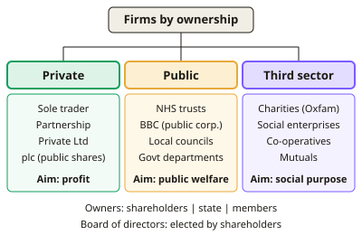

A-level Economics Year 13 · Topic 5
Business objectives and growth
This topic looks at different types of business, what they're trying to achieve, and how they grow.
We will cover types and sizes of firms, profit, revenue and sales maximisation, satisficing, and social and ethical objectives.
Then we look at the principal agent problem, organic and external growth, constraints on growth and demergers.
- 7 subtopics
- 191 questions
- Free: 5.1 notes and 10 questions
In this topic
- 5.1Types and sizes of firms: private, public and third sector, and ownership structuresFree below · 30 questions
- 5.2Profit, revenue and sales maximisation as business objectivesOpen in Full Marks · 23 questions
- 5.3Satisficing, managerial and growth objectivesOpen in Full Marks · 30 questions
- 5.4Social, environmental and ethical objectives: CSR, not-for-profit organisations and social enterprisesOpen in Full Marks · 28 questions
- 5.5The principal-agent problem and the divorce of ownership from controlOpen in Full Marks · 22 questions
- 5.6Business growth: organic growth, mergers, takeovers and types of integrationOpen in Full Marks · 24 questions
- 5.7Constraints on growth and demergersOpen in Full Marks · 34 questions
5.1 · Free notes
Types and sizes of firms: private, public and third sector, and ownership structures

Key points
- The private sector is owned by individuals or shareholders and run mainly for profit. The public sector is owned or controlled by government. The third sector is voluntary or not-for-profit.
- Sole traders and partnerships have unlimited liability, so owners' personal assets are at risk if the business fails. Their finance is limited to personal savings, bank loans and retained profit.
- Private limited companies (Ltd) have limited liability and a separate legal personality. Their shares cannot be offered to the general public, so raising finance is harder than for a plc.
- Public limited companies (plc) may sell shares to the public, usually through a stock exchange. They can raise large sums of equity, but they face disclosure rules and the risk of takeover.
- Limited liability means shareholders can lose only what they invested. This encourages investment and risk-taking, but it can create moral hazard, because creditors bear losses beyond the capital invested.
- Separation of ownership and control: shareholders (owners) elect a board of directors (chair, CEO, executive and non-executive directors). The board sets strategy and appoints managers, and this creates the principal-agent problem.
- Public sector bodies include the NHS, local authorities and public corporations such as the BBC. Their objectives include providing merit goods and public goods, social welfare and meeting targets, rather than maximising profit.
- Third sector bodies include charities, social enterprises, co-operatives and mutuals (e.g. building societies). Surpluses are reinvested in the social aim or shared with members, not paid out to external shareholders.
- Privatisation transfers assets from the public to the private sector (e.g. Royal Mail flotation, 2013). Nationalisation is the reverse. Ownership change alters objectives, and exams reward discussion of efficiency against social aims.
- Size is measured by number of employees, turnover, market share or capital employed. A common SME guide is micro under 10, small under 50 and medium under 250 employees. Larger firms have 250 or more.
- Firms stay small because of niche markets, personal service, the owner's preferences or limited finance. They grow for economies of scale, market power and risk spreading. Evaluate with diseconomies of scale and X-inefficiency in large state-owned firms.
In more detail
- Worked liability example: a sole trader's business fails owing £50,000, so she may have to sell personal assets to pay; a shareholder in a limited company would lose only their investment.
- Small firms matter: over 99% of UK businesses are small or medium-sized enterprises, employing around 60% of private-sector workers.
- Employee ownership: the John Lewis Partnership is owned by its employees, who share in the profits through a bonus.
- Exam tip: link each ownership type to its objectives: plcs → shareholder returns; the public sector → public service; the third sector → social aims.
Practice
Types and sizes of firms: private, public and third sector, and ownership structures: 10 questions
Pick an answer to check it, or open the answer for the explanation.
1. Which feature distinguishes a public limited company (plc) from a private limited company (Ltd)?
- It may offer its shares to the general public
- It is owned by the government
- It has no board of directors
- Owners have unlimited liability
Show answer
A: It may offer its shares to the general public. A plc can sell shares to the public, usually through a stock exchange. Both plcs and Ltds have limited liability and a board of directors, and neither is state-owned.
2. Limited liability means that shareholders in a company:
- Must manage the firm themselves
- Can lose no more than the amount they invested
- Are personally liable for all company debts
- Cannot receive dividends
Show answer
B: Can lose no more than the amount they invested. Limited liability caps a shareholder's loss at their investment. Their personal assets are protected, which encourages investment but can encourage risk-taking.
3. Which of the following is best classified as a third-sector organisation?
- A sole trader plumber
- Tesco plc
- An NHS hospital trust
- Oxfam, a registered charity
Show answer
D: Oxfam, a registered charity. Charities are voluntary, not-for-profit organisations in the third sector. Tesco and the sole trader are private sector, and NHS trusts are public sector.
4. Using employee numbers alone (micro under 10, small under 50, medium under 250), a UK firm with 120 staff is classed as:
- Large
- Medium
- Small
- Micro
Show answer
B: Medium. 120 employees is above 50 and below 250, so the firm is medium-sized. A large firm has 250 or more employees.
5. Why does the principal-agent problem arise in a large plc?
- Directors own all of the shares
- Managers run the firm but may pursue aims different from owners
- Workers cannot form trade unions
- The government sets all prices
Show answer
B: Managers run the firm but may pursue aims different from owners. Ownership is separated from control. Managers (agents) have more information and may seek pay, status or growth rather than the profit and dividends shareholders (principals) want.
6. Privatisation is best defined as:
- Transfer of assets from the private to the public sector
- Transfer of assets from the public to the private sector
- Increasing competition between public sector bodies
- Cutting government spending on welfare
Show answer
B: Transfer of assets from the public to the private sector. Privatisation moves ownership of assets from the state to private owners, e.g. the Royal Mail flotation. The reverse is nationalisation.
7. Which statement about a worker co-operative is correct?
- Its shares are traded on the stock exchange
- It is owned and democratically controlled by its employees
- Its owners must have unlimited liability by law
- It is owned by the state
Show answer
B: It is owned and democratically controlled by its employees. A worker co-operative is owned and controlled by its employee-members, often one member one vote, and profits are shared or reinvested. It is not state-owned or stock-exchange listed.
8. A plc earns £8m profit after tax and retains £3m. With 50 million shares in issue, the dividend per share is:
- 16p
- 6p
- 10p
- 5p
Show answer
C: 10p. Dividends = £8m − £3m = £5m. Divided by 50m shares this gives £0.10 per share, which is 10p.
9. Which is the most likely reason a firm remains small?
- It serves a niche market with limited demand
- It wants to maximise market power
- It has unlimited access to finance
- It enjoys large economies of scale
Show answer
A: It serves a niche market with limited demand. Firms serving niche or personalised markets have limited scope for growth. Economies of scale, market power and easy finance would all encourage growth.
10. The main role of a board of directors in a plc is to:
- Guarantee a fixed dividend each year
- Set strategy and appoint senior managers on behalf of shareholders
- Run every department day to day
- Set government tax policy
Show answer
B: Set strategy and appoint senior managers on behalf of shareholders. The board is elected by shareholders and is accountable to them. It sets the strategic direction and appoints and monitors senior managers. Dividends depend on profit and are not guaranteed.
Keep going in Full Marks
Full Marks has 30 questions on Types and sizes of firms: private, public and third sector, and ownership structures (20 more than here), set out in practice levels. You also get notes and 3D models for all 7 subtopics of Business objectives and growth, plus games, timed exams and past papers.